In 2012, the U.S. Department of Energy (DOE) Sustainability Awards recognized 20 teams and individuals representing DOE national laboratories for their outstanding sustainability contributions, including accomplishments in managing pollution, waste, energy, water, and vehicle fleets.
The 2012 winners improved sustainability operations by developing on-site renewable energy sources; repairing and replacing inefficient equipment; installing green information technology software and hardware; right-sizing fleets while increasing the use of alternative fuels and alternative fuel vehicles; recycling and reusing equipment in lieu of disposal; using innovative approaches to improve environmental quality and public health and safety; developing and advancing new processes to improve productivity; increasing the use of recycled water rather than potable water; and promoting sustainability throughout their organizations through collaborative partnerships, education and outreach.
Award categories included:
- Change Agents
- Community Collaboration and Engagement
- Comprehensive Energy Management
- Comprehensive Fleet Management
- Cradle to Cradle
- Environmental Management Systems
- Exceptional Service/Sustainability Champion
- Greenhouse Gas Management—Scope 1 and 2
- Health and the Environment
- Living Laboratory
- Water Resources
- DOE Headquarters Metering Competition.
Change Agents
An individual (or group of individuals) who takes the initiative to foster behavior change in his or her immediate work environment, organizational unit, or site. Recognition focuses on efforts, large or small in scope, that advance one or more of the goals identified in the DOE's Strategic Sustainability Performance Plan (SSPP).
Environmental Management's Sustainability Hero: Donna Green
Donna Green is the Office of Environmental Management's (EM) sustainability hero for constantly promoting sustainability throughout EM. As the team leader in EM's Office of Decontamination and Decommissioning and Facility Engineering, Donna focused on the "facility engineering" component that provides the policy and direction for EM's sustainability efforts. Donna interfaced with EM senior management to ensure its full understanding of applicable laws, executive orders, and DOE sustainability goals in the development of EM's sustainability efforts. She also worked with EM's site sustainability managers to ensure sustainability efforts were successfully carried out. Her work with both groups led to many successes, such as EM's incorporation of sustainability as a management performance goal, which requires senior managers to report monthly on their progress in helping EM meet its sustainability goals. Donna's mentoring activities were also integral to EM's sustainability successes, both within her team and with the many participants of the EM Sustainability Working Group.
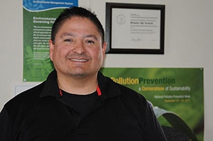Ronnie Garcia: Master of Minimization
Ronnie Garcia's reputation as a "master of minimization" is solidly based on his involvement in 25 projects at Los Alamos National Laboratory (LANL). His contributions to promoting sustainable operations at LANL include crushing light bulbs to reduce the number of shipping containers by 80%, using 10,000 tons of existing shielding for the Los Alamos Neutron Science Center Materials Test Station (saving millions of dollars in potential procurement expenses and future disposal costs), and introducing personal protective equipment that can dissolve into non-hazardous components rather than be disposed as solid low-level radioactive waste (avoiding an estimated 1,300 cubic meters of waste in one year). Ronnie saw opportunities to integrate sustainability in LANL's mission and made them a reality.
Community Collaboration and Engagement
Demonstrations of effective collaboration and engagement with local and regional communities on sustainability issues.
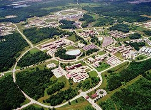Argonne Develops and Conducts Sustainability Workshop for Middle School Teachers
Argonne National Laboratory's Sustainability Workshop for Middle School Teachers links sustainability to local initiatives and resources. Argonne scientists worked with the teachers on topics such as global warming and climate disruption; the benefits and risks of common energy sources; urban planning and land use; and transportation, including electric vehicles, plug-in hybrids, and biofuels. In 2011, 12 middle school teachers participated in in a three-day workshop that included seminars, tours, and hands-on lab activities. One of the outcomes of this workshop included teacher-developed materials, artifacts, and lesson plans, which were further developed, tested, and showcased on Argonne's Green Lab Initiative website. In 2012, Argonne continued the successful workshops by offering two five-day Sustainability Workshops free of charge to middle school teachers. Teachers received an Illinois teaching certificate credit for the workshop and completed hands-on experiments such as building titanium dioxide solar cells and testing them for power levels, efficiency, and capacity.
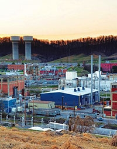Reaching Beyond — Y-12 Sustainability Outreach
Y-12 performs collaborative sustainability outreach activities within the Y-12 Complex and in the local community. Each year, Y-12 observes Earth Day with sustainability-focused booths, activities, and guests (approximately 1,800 employees attended the 2011 event). To promote sustainable acquisition among Y-12 personnel, the idea of "Spending Green on Green" was conveyed in the likeness of a dollar bill featuring the words "water sense," "recycled content," "biobased content," and "ENERGY STAR/EPEAT." Extending its support for sustainability and carbon footprint reduction into the community, Y-12 participates in Oak Ridge Earth Day activities and the Run for Clean Air sponsored by the East Tennessee Clean Fuels Coalition. Twice a year, the Y-12 Aluminum Beverage Can Recycling Committee donates proceeds from collecting and recycling aluminum cans to local charities nominated by employees. Y-12 also promotes "America Recycles Day," performs Tennessee Pollution Prevention Partnership and Federal Electronics Challenge mentoring, and participates in periodic outreach activities at local schools. Y-12 contributions to the community also extend through volunteer activities that assist local nonprofit agencies paint, landscape, and build ramps for people with disabilities. More than 800 participants with ties to Y-12 participated in the 2011 Volunteer Day.
Comprehensive Energy Management
Comprehensive or replicable management approaches to energy efficiency and renewable energy management programs. Programs may be at the organizational, regional, or campus-wide level and should include cross-cutting strategies to achieve and exceed the goals of energy-related laws, executive orders, and the SSPP.
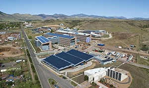Comprehensive Energy Management at the National Renewable Energy Laboratory
The National Renewable Energy Laboratory (NREL) demonstrates comprehensive leadership in both passive and active energy management through a four step method: measuring energy consumption, finding cost effective opportunities to save energy, implementing those opportunities, and tracking progress. Active energy management includes developing on-site renewable energy sources, such as wind turbines, photovoltaic systems, solar thermal installations, and renewable fuel heating systems like the wood-chip-fueled hot-water boiler integrated into NREL's district heating system. Utilizing the Federal Guiding Principles for High Performance Sustainable Buildings in all new construction, major renovations, and existing building projects is another example of active energy management. Passive energy management involves performing energy audits that assess requirements and identify the need for clean energy technologies. This process resulted in a reduction of per occupant energy use from 300 watts to 64 watts in one facility through use of ENERGY STAR equipment, laptops, power management, LCD monitors, LED task lighting, and voice over internet protocol (VOIP) units. Audits also assessed building occupants' comfort levels to ensure the compatibility of energy management and worker satisfaction. To promote awareness of these new technologies, user manuals were issued to educate occupants about their building's features, workstation equipment, and information technology changes.
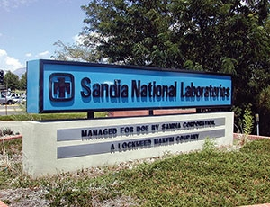Server Virtualization at Sandia National Laboratory New Mexico: Life Cycle Improvement
Sandia National Laboratories New Mexico effectively and seamlessly transformed its operations to provide large-scale infrastructure server virtualization. Over the past four years, Sandia's "virtual first" policy has maximized energy efficiency. Under this approach, more than 700 virtual servers were deployed spanning six network partitions and multiple Sandia sites. Typical physical servers achieve 10% to 15% utilization of total capacity, yet require 100% power and cooling. Sandia's current server hardware technology can achieve up to 100 virtual servers on each individual physical host server. By combining physical host servers into virtualization clusters using commercial software, host servers communicate among themselves to balance the load of all the virtual servers, providing efficient resource utilization and nearly 100% up time for applications. The design incorporates a reserve margin, so in the event of a crash, other servers pick up the slack. This offers a high level of availability and reliability previously impossible with physical servers. Server virtualization resulted in estimated hardware savings of $3.4 million and net electricity savings of roughly 7.6 billion Btu per year for additional cost savings of more than $200,000 annually. Server virtualization also eliminated the need to periodically upgrade and disposition old servers.
Comprehensive Fleet Management
Comprehensive or replicable management approaches to fleet management programs. Programs may be at the organizational, regional, or campus-wide level and should include cross-cutting strategies to achieve and exceed the goals established in laws, executive orders, and the SSPP.
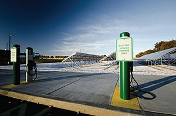Putting Words into Action at Pacific Northwest National Laboratory
Pacific Northwest National Laboratory (PNNL) put words into action by right-sizing its vehicle fleet. Fleet Management and Facility Operation Management personnel worked together to determine the appropriate composition of the fleet. To right-size the fleet, PNNL began removing commercial motor vehicles (trucks with more than a 10,000 gross vehicle weight rating) from its inventory and replacing them with more efficient or alternative fueled vehicles (AFVs). PNNL also promoted the use of clean, more-efficient vehicles through the installation of onsite electric vehicle (EV) charging stations. One of the keys to easing the culture shift from conventional, gas-powered engines to smaller, more environmentally friendly EVs was holding an EV Demonstration Day for field and service staff, safety and health representatives, and management. Users were encouraged to test drive EVs, as well as load and unload materials and tools, then rate their safety and comfort and evaluate how the vehicle could be used in their daily activities. The users' evaluations informed the selection of the 10 EVs put into service. PNNL has reduced its petroleum-based fuel by 20% from its 2008 peak, and 72% of its fleet are now AFVs.
Cradle to Cradle
Demonstrations of an integrated, system-based approach to the acquisition or management of products and materials. This may include, but is not limited to, source reduction practices related to the generation of non-hazardous solid wastes, hazardous wastes, or pollution; approaches that take into account the lifecycle impacts of a product or processes; or reusing or repurposing materials or products that would otherwise be discarded.
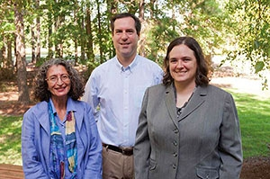Green Electronic Procurement Implementation and Tracking at the Thomas Jefferson National Accelerator Facility
Thomas Jefferson National Accelerator Facility's "bundling" of computer systems is the latest advancement in its system-based approach for integrating Electronic Product Environmental Assessment Tool (EPEAT) acquisition in the purchase and upgrade of computers. The bundles are configured to ensure that selections can be made at the needs level of an administrative assistant, a technical staff member, and a scientist. The ordering and approval process for new computers is streamlined and handled electronically, saving employee time and reducing waste. The bundling system has enhanced efficiency for the Laboratory's Computer Center in several areas. EPEAT gold levels now dominate purchases; purchases of EPEAT gold computer monitors increased from 31% in 2009 to 95% in 2011. Bundling limits the variety of computers, so the Computer Center can now more effectively manage software installations and upgrades, reducing vulnerability and security threats to the laboratory's network-based systems. In addition, ordering time and staff effort has been reduced from a multi-step time intensive effort to an automated system with a small inventory buffer.
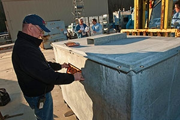Y-12 Targeted Excess Materials (TEM) Program Pursues Sustainable Disposition Paths
The Y-12 Complex Targeted Excess Materials (TEM) program developed an approach to successfully handle hard-to-disposition excess materials, critical and strategic materials, and equipment. Disposition of these items are often complicated because they often have contamination, classification, or special material issues. TEM facilitates the reuse or recycling of unneeded Y-12 materials and equipment—in lieu of disposal—to free up storage space for active projects. As a result of this process, Y-12 reduces expenditures by avoiding new purchase and disposal costs. TEM also supports DOE's Critical Material Program and the U.S. Department of Defense's (DOD) Strategic Materials Program by identifying valuable and strategic materials in Y-12 storage with no planned use and making the materials available for reuse. Items determined as unneeded by DOE and DOD are made available to commercial customers or appropriate reuse/recycle paths. In 2011, items were transferred to DOD to support personnel protection needs in Iraq and Afghanistan, commercial vendors, and the DOE International Thermonuclear Experimental Reactor for a planned research project. Total return on investment for these transfers was $490,500.
Environmental Management Systems
Emphasis on subject matter breadth, integration of organizational units, integration of SSPP goals, and specific and measurable accomplishments.
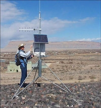Office of Legacy Management: Not Just Your Average EMS
DOE's Office of Legacy Management (LM) is committed to excellence in environmental stewardship as it completes its mission to fulfill DOE's post-closure responsibilities and ensure the future protection of human health and the environment. LM leverages its environmental management system (EMS) to comprehensively incorporate life cycle environmental considerations into all aspects of its mission. This approach promotes efficient use of finite resources, minimizes waste and adverse environmental impacts, and complies with applicable requirements. LM is currently responsible for stakeholder support, record keeping, inspecting, monitoring, and maintaining 89 sites across more than 65,000 acres located in 28 states and Puerto Rico. Its EMS is unique in that LM employees and contractors have joint responsibility for its implementation. The EMS core team, composed of LM employees and contractors, oversees the EMS program teams and sustainability program teams, approves EMS goals, and functions as the steering committee for management-level decisions, especially on programmatic objectives or targets. Due to this shared commitment, LM has already met or is on track to meet or exceed DOE's sustainability goals. Furthermore, in 2011 LM had no environmental violations despite conducting 800 permit-related activities and 152 directives reviews.
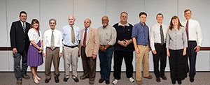National Energy Technology Laboratory Successful Implementation of its Environmental Management System
The National Energy Technology Laboratory's (NETL) EMS extends nationwide as it integrates all organizational units at its sites in Albany, Oregon; Morgantown, West Virginia; and Pittsburgh. NETL's EMS helps achieve DOE's sustainability goals by identifying, setting, and measuring specific objectives and targets on a quarterly basis. NETL's system led to several significant accomplishments. In 2011, NETL reduced its generation of routine nonhazardous waste by 15% from a fiscal year (FY) 2008 baseline and reduced its hazardous waste by approximately 30%. In the same year, NETL recycled or reused 84% of its construction and demolition debris. Through carpooling, shuttle services, and promoting the use of alternative fuels, NETL reduced petroleum consumption by 20%, exceeding the goal of 12%, and increased alternative fuel use by 55% over the FY 2005 baseline. NETL also reduced energy intensity by 23%—5% greater than the target. Green procurement is also progressing—78% of janitorial cleaning products purchased were environmentally preferred products, 100% of maintenance products were ENERGY STAR-rated, and 100% of copier and printer paper contained a minimum 30% recycled post-consumer fiber.
Exceptional Service/Sustainability Champion
Demonstration of a history of exemplary performance in leading implementation of sustainable practices while reflecting a comprehensive approach to energy and environmental management through innovative strategies, practices, and outreach.
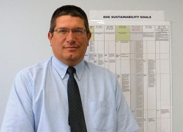Gregg Sawl: National Energy Technology Laboratory's Sustainability Champion
Gregg Sawl's commitment to sustainability is clearly evidenced through his work as energy manager for NETL. Through his involvement in developing the NETL 10-year site plan, Gregg ensured projects incorporate state-of-the-art energy saving design features. In FY 2011, NETL achieved a 23% energy intensity reduction compared to the 2003 baseline year, exceeding the goal of 18%. The reduction was achieved in part through the Pittsburgh site's purchase of 100% of its natural gas from a local renewable energy source— a landfill. The NETL Morgantown Day Care Center uses geothermal heat pumps and chilled beam technology for heating and cooling cycles. The Center's electric power is supplemented by a 25-kilowatt photovoltaic array and 32 roof domes that capture daylight and convey it through reflective tubes. Light sensors and controllers in each room dim the output of the electrical lighting based on ambient light levels. These features will reduce the energy consumption of the center by more than 50% compared to the ASHRAE 90.1/2007 baseline building design and save approximately 240 million Btu per year. NETL is pursuing LEED Platinum certification for the center.
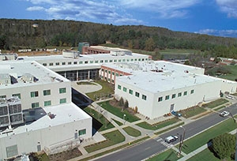Greg Palko: Champions Oak Ridge National Laboratory's Sustainable Energy and Water Efforts
Greg Palko has served as the energy efficiency manager of ORNL since 2004. During this time, Greg developed an innovative energy-management program that encompasses metering, energy savings projects, auditing, funding strategies, communication plans, reporting, and employee involvement. His inventive nature led him to develop a process that uses internal utilities variance funding to cover facility maintenance. Under this process, more than $3 million in projects have been implemented with paybacks of less than five years. Greg's innovative funding strategies also allowed ORNL to procure items using expense funding that historically required capital funds. For example, a project to replace 400 motor starters had been estimated as an $800,000 capital project. These items were instead purchased individually for a total of $300,000, a 62.5% reduction in cost. Additionally, because the new starters include a variable frequency drive, the energy savings paid for the project in only 1.5 years. Since 2003, ORNL reduced its energy intensity by 19.6%, saving about $6 million per year. An early advocate and supporter of the ORNL Sustainable Campus Initiative, Greg is actively involved in nine roadmaps guiding the Initiative.
Greenhouse Gas Management—Scope 1 and 2
Implementation of site greenhouse gas reduction strategies and management approaches that address Scope 1 and 2 emissions. The approach should exceed or supplement targets in the SSPP and emphasize a holistic approach to greenhouse gas management.
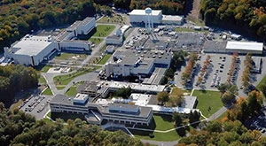Comprehensive Greenhouse Gas Reduction at Princeton Plasma Physics Laboratory
Princeton Plasma Physics Laboratory (PPPL) integrated comprehensive greenhouse gas (GHG) management with its environmental management system and facility operations to achieve an overall reduction of 48% in GHG emissions since 2008. Scope 1 and 2 GHG emissions were reduced by 50.2% and Scope 3 emissions were reduced by 7.7%. PPPL's significant reduction in GHG emissions is largely due to efforts to control fugitive losses of sulfur hexafluoride (SF6) and a reduction in emissions from on-site combustion of fuel through improved boiler operations. PPPL reduced SF6 by 65% in three years through a series of proactive measures. PPPL conducted comprehensive leak identification and repair, improved the cylinder measurement and inventory program, redesigned high voltage power equipment, and captured SF6 from relief valves. In addition, three of PPPL's four central boilers were retrofitted with modern digital combustion control systems, which resulted in increased boiler efficiency and reduced emissions. Collectively, these improvements resulted in a 23% reduction in GHG emissions from the central plant.
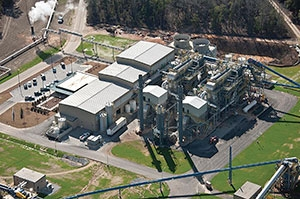Savannah River Site Biomass Steam and Co-Generation Project
The Savannah River Site's new biomass-fueled steam cogeneration plant will reduce GHG emissions by 100,000 tons per year. The new steam plant, along with two smaller biomass-fueled steam plants, replaced a 1950s coal-fired steam plant and aging fuel oil-fired package boilers. The new steam plants will eliminate emissions of 400 tons of particulate matter and 3,500 tons of sulfur dioxide each year. The three facilities can produce more than 2 billion Btu per year of thermal renewable energy with a minimum generation of 77,000 MWh of green power. Under the terms of the energy savings performance contract (ESPC), the contractor will be paid with savings in energy, operations, and maintenance costs. The ESPC is estimated to save $34 million in operating and maintenance costs each year.
Health and the Environment
Integration of health and environmental approaches. Examples include strategies and resulting actions that simultaneously focus on both environmental sustainability and workplace safety.
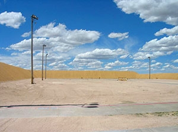Protecting Workers While Implementing Sustainability at the Pantex Firing Range
Pantex Plant personnel integrated sustainability in their efforts to remediate and rethink the use of the plant's firing ranges, which led to protection of worker health and the environment. After years of use, the dolomite-covered berms in the Pantex firing range became saturated with lead bullets. As the lead built up, bullets fired into the berms would fragment and ricochet back in the direction of the Pantex personnel. Rather than dispose of the lead-contaminated dolomite, Pantex decided to filter, clean, and reuse a majority of the dolomite, achieving a 98% reduction in hazardous waste generation. The plant avoided waste shipping and disposal costs and the purchase of approximately 1,500 tons of new dolomite, saving more than $450,000. While worker safety was the motivator for the dolomite reuse, it also prompted Pantex to "go green" at its indoor firing range by replacing conventional lead ammunition with frangible ammunition. This reduces the potential for inhalation of lead dust by security personnel who use the range and maintenance personnel who clean the bullet trap.
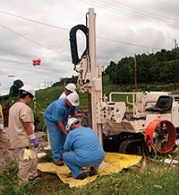Savannah River Site's Innovative Approach for In-Situ Detection of Mercury in Soils and Sediments
The Savannah River National Laboratory (SRNL) creatively applied commercial equipment to develop a new, innovative approach for detecting elemental mercury in sediments and soils beneath former industrial facilities. SRNL uses equipment developed for subsurface detection of volatile organic contaminants, which reduces the costs of characterization by limiting the number of soil samples sent for laboratory analysis. This process also provides for improved delineation of subsurface contamination that expedites site characterization. As contaminated areas are more clearly delineated through the use of field-based or in-situ methods, strategic sampling plans are used to collect a smaller number of targeted samples. Collecting fewer soil samples decreases the amount of potentially contaminated sediments removed from the subsurface, minimizing the potential for exposure to hazardous vapors. The cost-effective system can be replicated at other DOE sites, as illustrated by successful deployment at two mercury-contaminated sites within the Oak Ridge/Y-12 complex.
Living Laboratory
Application of sustainability goals to site operations and infrastructure. Particular emphasis is placed on sites' advancement of innovative approaches and technologies developed by DOE sites.
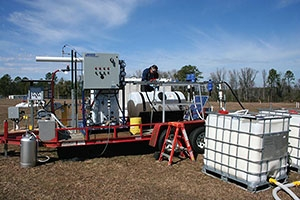Savannah River Site: Moving Beyond Pump and Treat for Chlorinated Solvents Remediation
Rather than continue the decades-long pump-and-treat system for a chlorinated solvent groundwater plume at the Savannah River Site, researchers pursued enhanced attenuation (EA), which led to successfully degrading the plume and removing the pump and treat system. EA uses active engineering solutions to alter the target site. The solution was to develop structured geochemical zones, including neat (pure) vegetable oil deployment in the deep vadose zone in the former source area, emulsified vegetable oil deployment within the footprint of the groundwater plume, and identification of attenuation mechanisms and rates for the distal portion of the plume. Oil injections were conducted in early 2008. Monthly groundwater monitoring evaluated the effectiveness of transitioning the pump and treat system to monitored natural attenuation using the structured geochemical zones. Modeling indicates that this minor intervention to optimize the geochemistry and degradation processes will reduce the time for closure from over 30 years to approximately 10 years using the EA paradigm. Eliminating the pump and treat system will reduce GHG emissions by nearly 1,000%, energy consumption by approximately 6,000%, and costs by $1 million.
Water Resources
Implentation of an integrated approach to water resources management, addressing all water types as potential resources (waste, storm, grey, etc.) and identifying opportunities for their reuse.
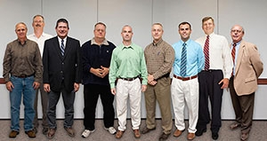Water Intensity Reduction at the National Energy Technology Laboratory
Implementation of Environment, Safety, and Health Management Plans led NETL to meet its FY 2020 water intensity reduction goal nearly 10 years ahead of schedule. In FY 2011, NETL reduced its potable water intensity by 14.8 gallons per gross square foot for a 44% reduction compared to its FY 2007 baseline, exceeding the 26% water intensity reduction goal set by Executive Order 13514. NETL achieved these results by installing low-flow toilets, urinals, faucets, and showerheads and incorporating closed-loop cooling systems that support research projects. Two of NETL's Morgantown buildings implemented rainwater harvesting systems. One used 200,000 gallons of rainwater in place of potable water, equal to 57% of total building water use. The other building, the Day Care Center, will capture rainwater for non-potable uses and will use less than half the potable water of a comparably sized day care center. Although it has already surpassed the goal, NETL is investigating the use of gray waste water for toilets, urinals, satellite boiler makeup water, and landscape irrigation for its Pittsburgh installations.
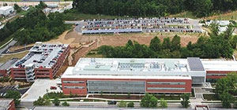Oak Ridge National Laboratory Water Resource Management Minimizes Quantity and Maximizes Quality
ORNL achieves water management goals and improved water quality through the integration of water resource management into construction, renovation, operations and maintenance, landscaping, and research and development. Like many DOE sites, meeting the water use reduction goal is complicated for ORNL. Despite increased operations since the baseline year, in FY 2011 alone, ORNL reduced water usage and the associated waste water generation by more than 288 million gallons. The associated cost avoidance is nearly $388,000. All completed water conservation efforts will reduce more than 435 gallons of water and associated waste water per year. ORNL's campus-wide "lab within a park" approach protects water quality through native landscaping, minimizing runoff, and improving the management of riparian zones flowing through the campus. Water quality is also enhanced through the use of rain gardens, retention and detention basins, pervious pavement, ledge gardens, and other forested landscapes.
DOE Headquarters Metering Competition
In January 2011, DOE HQ established a competition in the Forrestal Building for its five zones to reduce their electricity consumption from month to month. Meters in the building measure electricity used by lights and electrical outlets (equipment that employees have direct ability to control). The zone with the greatest reduction in average daily energy consumption compared to the previous month is the monthly winner.
DOE Headquarters Blue Zone
Congratulations to Blue Zone Captain David Danielson and all of the Blue Zone occupants for embracing sustainability and winning the competition five times during FY 2012, more than any other zone!
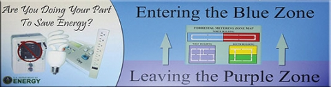